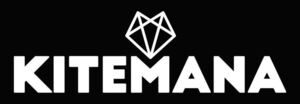

Trade Mark Journal No.2025/052 26 December 2025
WO0000001890865 (35)
Office of origin: European Union Intellectual Property Office (EUIPO)
Date of International Registration:1 October 2025
Date of designation in the UK:
1 October 2025

The mark contains the colours dark blue and white.
- Class 35
- Retail services, wholesale services, online retail and online wholesale services relating to kites, kites, kiteboards, sports bags, masts (poles), kite lines, kite buggies, kite grips, kite reels, sporting articles, sport equipment, water sporting articles, water sports equipment; retail services, wholesale services, online retail and online wholesale services relating to clothing, shoes and headgear, headsets, surf boards, protective water sports clothing, boards used for water sports, earplugs, skis, water skis, gloves, ankle socks, sport balls, sports caps, aqua shoes, sweatshirts; retail services, wholesale services, online retail and online wholesale services relating to sports beverages, vitamins, minerals, energy bars, energy beverages, food supplements, sun glasses, spectacles, sports goggles, sun-block, cosmetics, preparations for skin care, sun creams, sports jerseys, wet suits, swimming trunks, swimsuits; retail services, wholesale services, online retail and online wholesale services relating to sports jerseys, T-shirts, shirts, sports bras, surfboard covers, surfboards, kite shoes, fins for surfboards, bags, shawls, sports bags; retail services wholesale services, online retail and online wholesale services relating to jewellery, bracelets, small chains, waxes, kiteboard waxes, wax for surf boards, foot straps, sails for windsurf boards, kite rigs, kite trapezes, kite harnesses, kites; retail services wholesale services, online retail and online wholesale services relating to windbreaks, kite control sticks, kite shoes, kite sets, landboards, mountain boards, snow kites, air pumps for kites, buoyancy jackets, locks, clothes stretchers, covers for telephones, navigation systems, maps, nautical charts, wax removers, wax removers; retail services wholesale services, online retail and online wholesale services relating to wall racks, air fresheners, rucksacks, watches, altimeters, tracking and tracing apparatus, waterproof pouches, change purses, anemometers, screwdrivers, scented candles, charging systems, ponchos, fixing bands, fastening straps, surf pads, bindings for kites, kite leashes, surf leashes, cam buckles, kite hydrofoils.
KiteMana B.V.
Representative: NOORDZIJ PARTNERS B.V., Paulus Potterstraat 20 HS, NL-1071 DA Amsterdam, NETHERLANDS